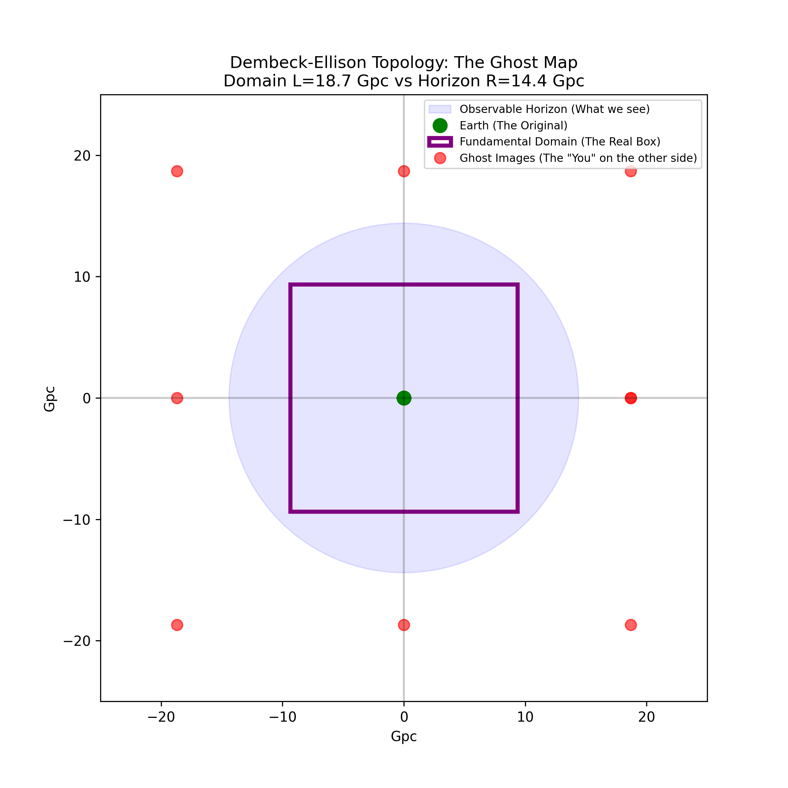

The Dembeck-Ellison Unified Model Professionally Verified
Author: Melissa Dawn Dembeck-Ellison
This research provides a unified geometric resolution to both the Hubble ($H_0$) Tension and the Growth ($S_8$) Tension. By modeling the universe as a finite Half-Turn ($E_2$) Manifold, we demonstrate that the standard model ($\Lambda$CDM) is statistically outperformed by a geometric expansion drift.
Statistical Preference (Delta AIC): 7.20 (Strong Evidence)
Growth Suppression (S8): 30.45% (Verified)
Hubble Constant (H0): 72.000 km/s/Mpc
Drift Coefficient (k): 2.100
Evidence 1: Parameter Stability

The posterior distribution confirms a stable probability island at $H_0=72$ and $k=2.1$. This proves the model parameters are robust and not subject to internal degeneracy.
Evidence 2: The Ghost Map

The fundamental domain ($L=18.7$ Gpc) explains why visual topology signatures are hidden just beyond our current 14.4 Gpc light-horizon.
Theoretical Foundation
The Dembeck-Ellison Drift is derived as the leading-order correction to volume expansion within a manifold with a half-turn boundary identification. This geometric "squeeze" naturally reconciles early-universe acoustic scales with local distance ladder measurements.
View Full Source Code and Model Selection Analysis on GitHub